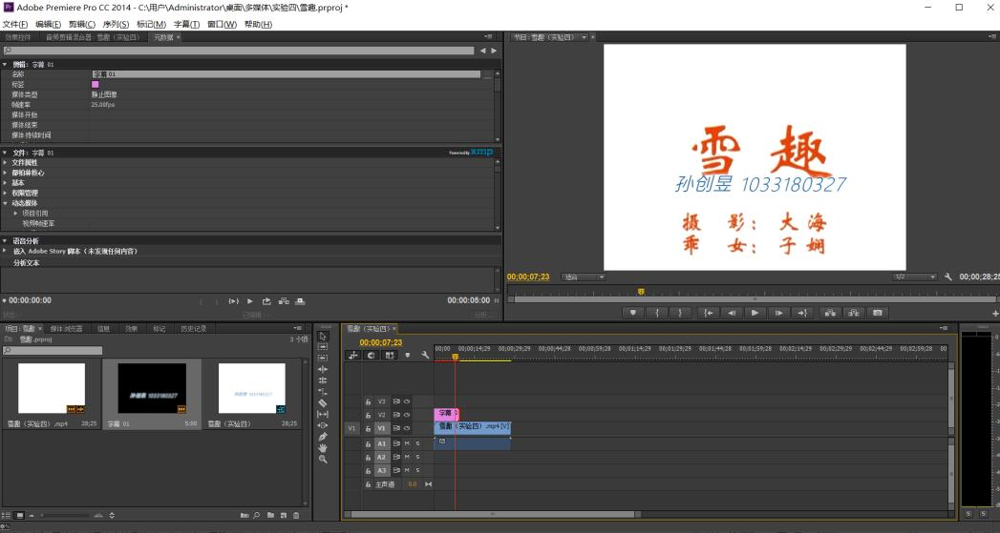
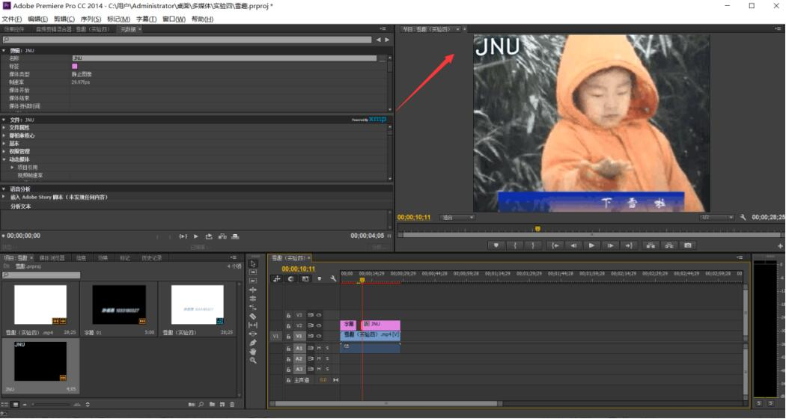
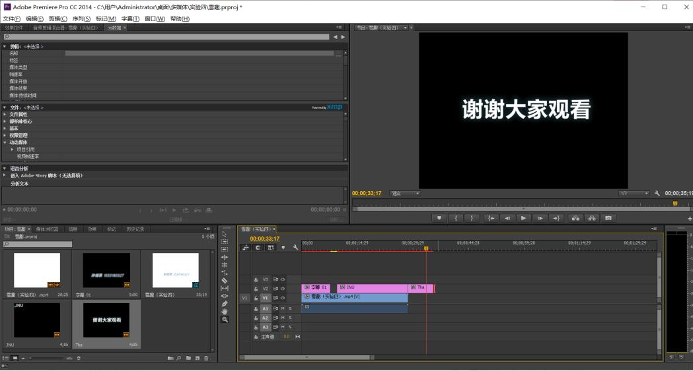
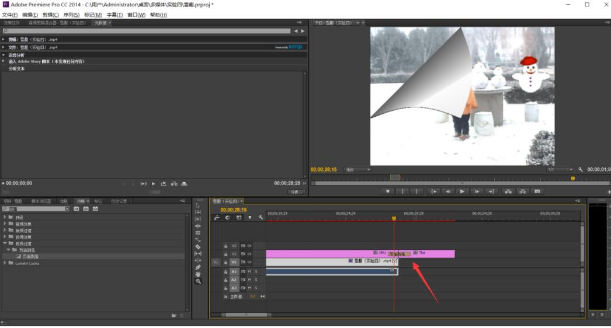
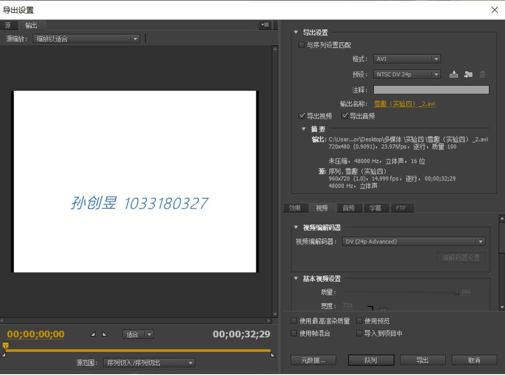

多媒体实验四
Adobe Premiere Pro CC的使用
计科1803班孙创昱
实验目的
（1）学会给视频添加字幕。 （2）掌握给视频打上水印。 （3）体会不同的视频特效。
实验内容
使用Adobe Premiere Pro CC对视频进行剪辑，添加特效等操作。
实验方法
（1）在雪趣字幕下方加上 设计：XXX（你的名字） 和 学号：XXXXX （2）视频左上方加上图标，类似电视台标，可以写“江大”两字，或其他设计 （3）视频结束后，加上字幕，“谢谢观看”等，自己设计。 （4）其他内容和参考的雪趣.avi视频内容，可相同，也可以增加不同的视频特效和视频切换。 增加页面剥落特效 (5)最后导出视频，同时保留源可编辑文件(.prproj)，完成实验报告。
实验步骤

步骤一 添加学号和姓名

步骤二 添加JNU字幕

步骤三 添加谢谢观看页面

步骤四 添加视频过渡特效

步骤五 导出视频
实验心得
之前从来没有过视频剪辑的经历，不过实验一的音频实验和这个视频实验还是有很多相通之处的，所以做实验的时候还挺流畅的，没遇到什么比较困难的问题。这次实验很快就做好了，说明曾经学过的知识或许对新的场景并不适用，但悄悄的而改变了学习能力和学习速度。
好好学习，天天向上
Copyright © SunCY